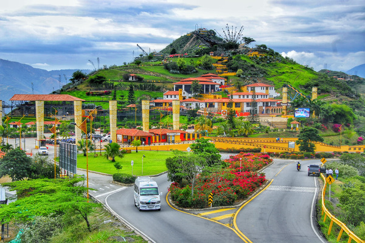
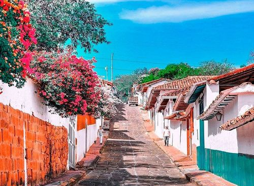
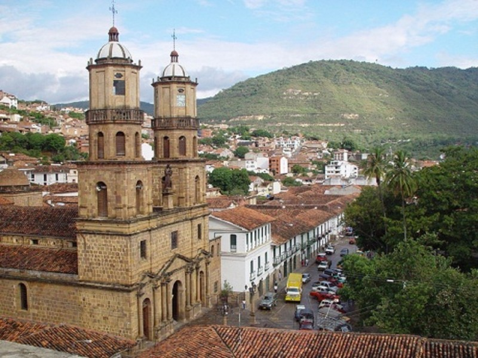
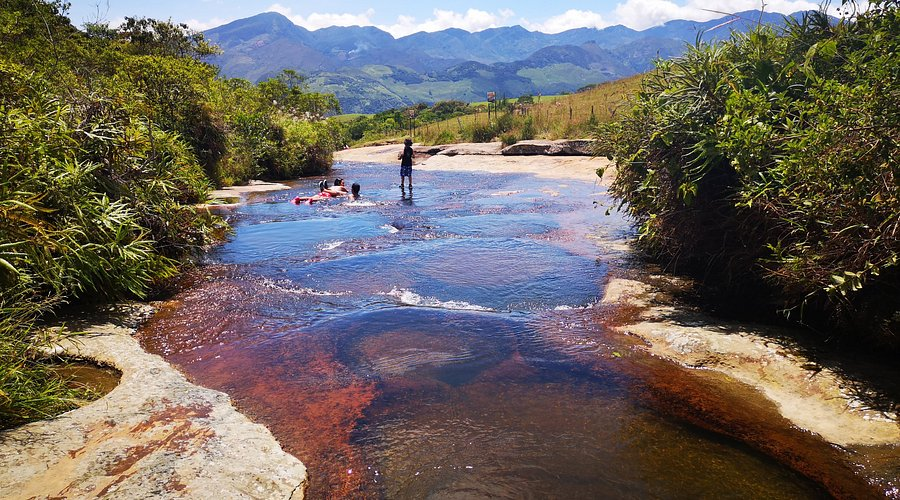

Principales sitios turísticos
Parque Nacional del Chicamocha (Panachi)
El Cañón del Chicamocha y su parque nacional son uno de los atractivos más importantes del departamento. En Panachi (Parque Nacional del Chicamocha) puedes disfrutar de atracciones culturales y extremas, como el Teleférico por el cañón, el Monumento a la Santanderianidad, y el acuaparque (con costo adicional). También puedes practicar deportes extremos como parapente, canopy y torrentismo, o explorar la cultura santanderiana en su pueblo simulado y probar la gastronomía local.
Más información (sitio oficial de turismo)Barichara
Una carretera sumergida en un paisaje desértico de tierra roja y amarilla serpentea hasta llegar a Barichara, donde la piedra es hogar, camino, iglesia, arte y cementerio. Su encanto está en que puedes hacer viajes en el tiempo hasta llegar a la época de La Colonia española, cuando las construcciones eran de bahareque y las paredes blancas de cal. Barichara fue declarado Monumento Nacional en 1978 por ser un testimonio arquitectónico de la conquista española que transporta a los turistas y habitantes a épicas historias llenas de belleza. No en vano este municipio es considerado el pueblo más bonito de Colombia, gracias a los dones de las artesanas que labraron con sus manos cada piedra para construir sus casas e iglesias. El pueblo se eleva sobre una vasta meseta árida y de clima templado con noches de cielos despejados. Si llegas desde la capital, ten en cuenta que de Bogotá hay 445 kms de distancia; mientras que desde Bucaramanga solo hay 118 kms de diferencia. Inicia por Barichara la búsqueda de cada uno de los encantos que ofrece Colombia.
San Gil
San Gil es un municipio colombiano ubicado en el departamento de Santander. Se sitúa sobre el eje vial entre Bucaramanga y Bogotá, y constituye el núcleo urbano más importante del sur del departamento de Santander. En el 2004 fue designado como la Capital Turística del departamento.
Quebrada las Gachas
La Quebrada de las Gachas, conocida como el Caño Cristales de Santander por su parecido con el famoso río de colores de la Sierra de la Macarena, es sin duda un destino fascinante e imperdible para los amantes de la naturaleza.
Otros sitios turísticos
- Cascada de Juan Curi
- Caminos de Lenguerke
- Parque Natural el Gallineral
- Ruta de los Miradores
- Salto del Mico
Comida típica
Platos representativos de Santander:
- Bandeja paisa santandereana / Cabro y arepa santandereana (variantes locales)
- Mute santandereano (sopa espesa)
- Hormigas culonas (en algunas zonas como tradición gastronómica)
- Lechona y platos con carne asada
Recomendación
Busca los platos en mercados locales y restaurantes tradicionales para una experiencia auténtica.
Información económica y ocupacional (estadística)
Santander es un departamento con actividad diversificada: industria, comercio, agricultura y servicios. Según estadísticas departamentales recientes, el Producto Interno Bruto (PIB) departamental en 2023 fue de aproximadamente 59.507 miles de millones de pesos (a precios constantes) y mostró crecimiento frente al año anterior. Además, los sectores que más aportan incluyen la industria manufacturera, comercio y agricultura.
Datos de empleo
Los datos de empleo en Santander muestran tasas de participación y ocupación en el departamento con valores específicos para el mes de junio de 2024, mientras que la información de la ciudad de Bucaramanga indica que la tasa de desempleo en el primer trimestre de 2024 para mujeres es del 12,7% y para hombres del 10,7%. El Departamento Nacional de Planeación (DNP) y el DANE son fuentes clave para obtener estos datos. Para ofertas laborales específicas, se pueden consultar portales como Computrabajo, Elempleo.com y Comfenalco Santander.
- Departamento Nacional de Estadística (DANE): Los datos más recientes de junio de 2024 señalan que la tasa de participación fue del 66,4% y la tasa de ocupación fue del 60,9% en el departamento.
- En Bucaramanga: En el primer trimestre de 2024, la tasa de desempleo para las mujeres fue del 12,7%, y para los hombres fue del 10,7%.
Actividades económicas
La actividad económica de Santander se caracteriza por ser muy diversificada, con sectores fuertes en la agroindustria (cultivos de palma de aceite, cacao, yuca, plátano y cítricos, así como explotación avícola y ganadera), la industria (alimentos, aceites, plásticos), el comercio y un creciente sector de servicios, especialmente la construcción y el turismo de aventura.
Recursos
Para cifras oficiales y series históricas puedes consultar los boletines del DANE y perfiles económicos del MinCIT.